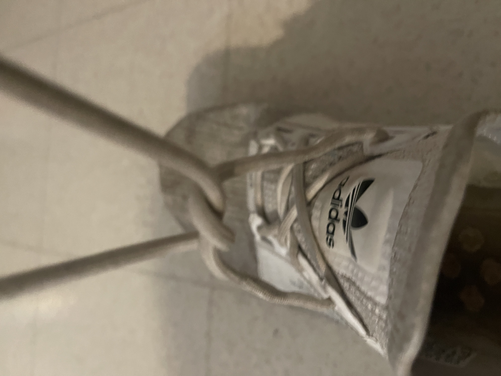

No matter what kind of shoe you have, they are most likely going to have shoe laces. There are many different ways that someone could tie their shoes but I am going to show you how I do it.
Grab both ends of the laces and criss cross them. From here, you want to overlap one over the other so that it looks like this
